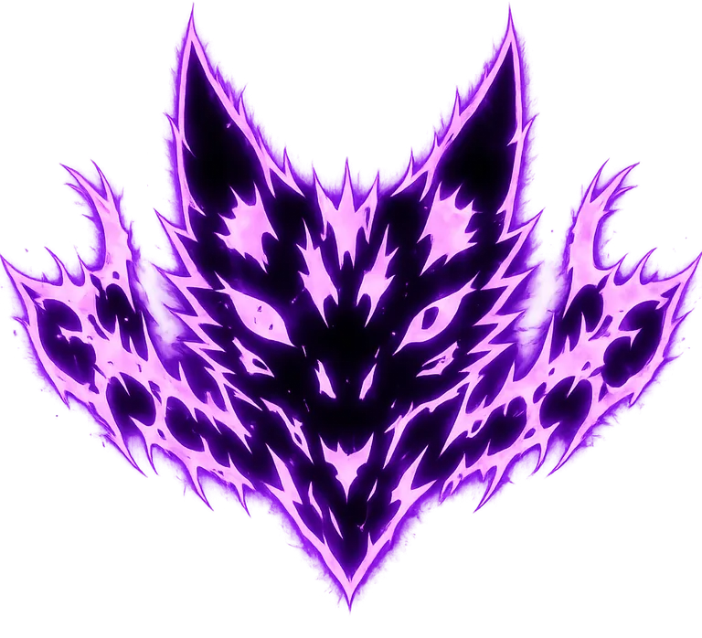
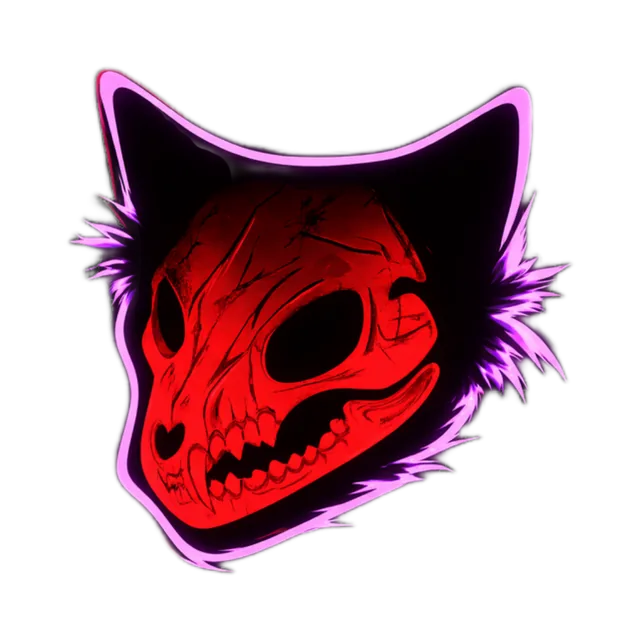
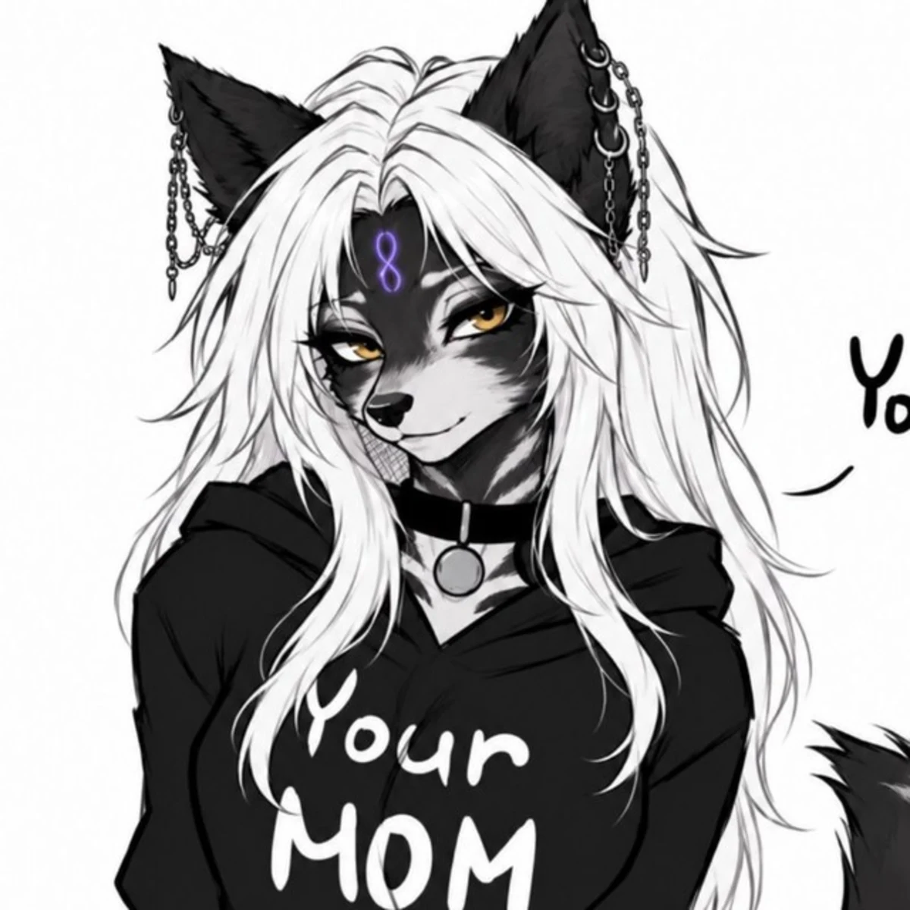
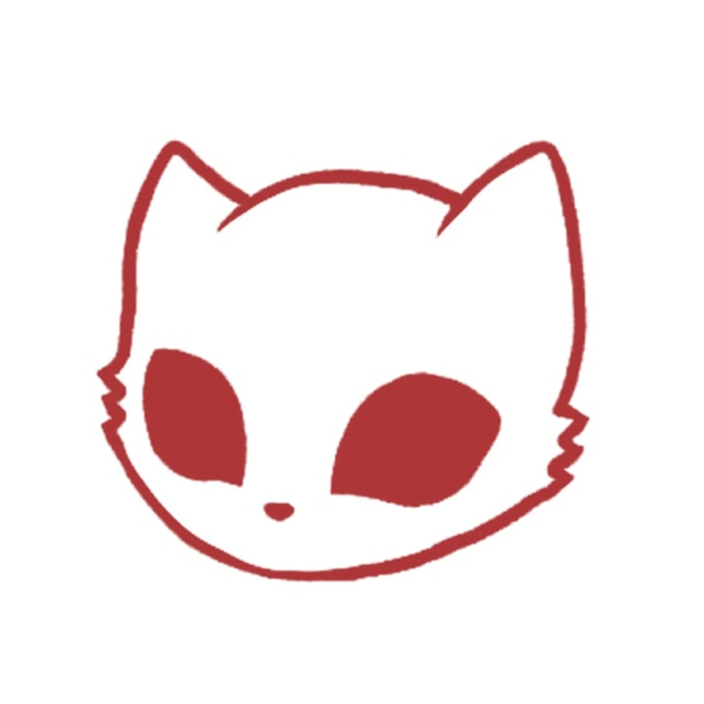
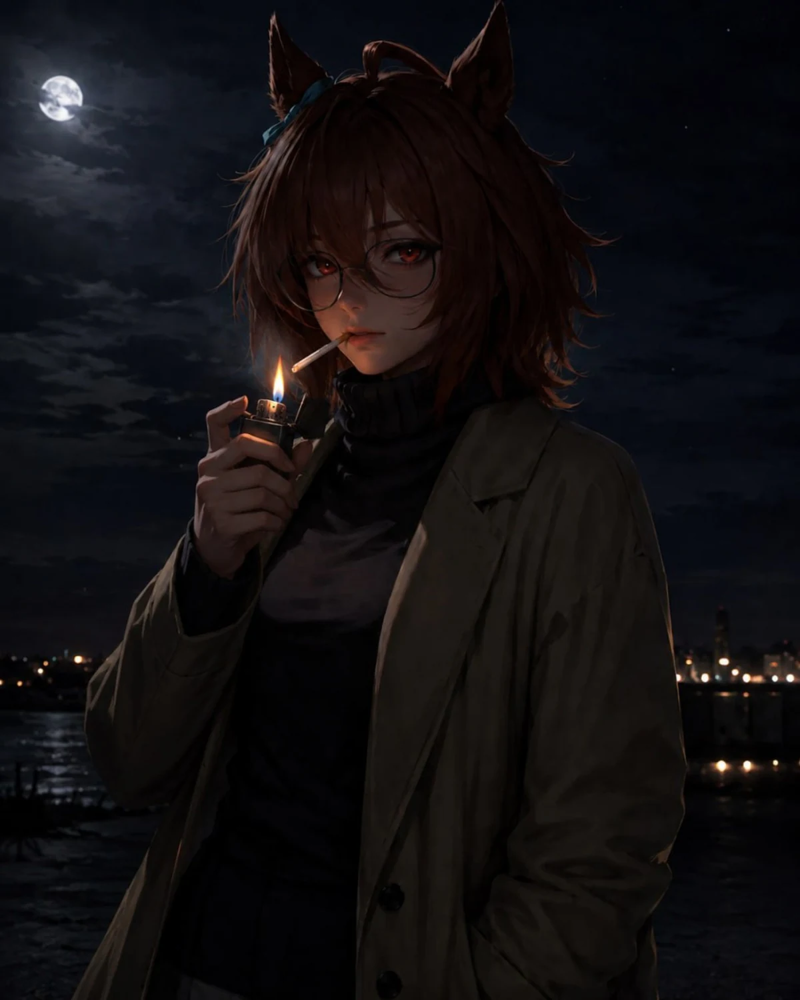
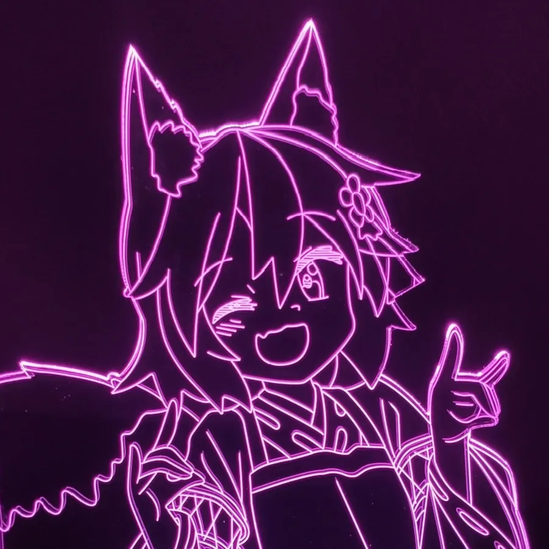

DARKCLAW
DARKCLAW — место, где собираются свои: для общения, творчества, VRChat и атмосферы, которую хочется чувствовать снова и снова. Здесь каждый раздел — часть одной живой системы, а не просто набор ссылок.

Твоя тень. Твоя стая. Твой дом.
DARKCLAW — место, где собираются свои: для общения, творчества, VRChat и атмосферы, которую хочется чувствовать снова и снова. Здесь каждый раздел — часть одной живой системы, а не просто набор ссылок.
DARKCLAW — пространство для общения, VRChat, творчества, игр и атмосферы без лишнего пафоса.
Смысл не в количестве, а в ощущении своего круга.
Здесь можно не только тусоваться, но и создавать.
DARKCLAW строится как отдельная эстетическая зона.
Раздел формируется. Когда будет готов — откроется как отдельный узел внутри системы.
Отдельная ветка проекта, отвечающая за VRChat-контент, кастомы, окружение и креативные сборки.
ОТКРЫТЬ RPC↗
FORGE GLASS / АКТИВЕНЛокации, визуал, интерактив, атмосфера.
Кастомы, стилистика и аксессуары.
Пропсы, объекты и визуальные пакеты.
Новый каркас, стеклянный интерфейс, жидкие переходы, усиленные анимации, возвращённый курсор и свежая система модулей.
Основная система загружена.
RPC ссылка и витрина активны.
Техподдержка в разработке.
Ожидается новая дата.
Фотографии участников показаны полностью, без жёсткого обрезания. Карточки команды пересобраны под новый liquid glass стиль.




Когда у события появится реальная дата, таймер ниже начнёт отсчёт автоматически.
Создатель DARKCLAW. Внешний профиль открывается только после ручного нажатия.
DARKCLAW identity established.
ARCHIVEDRedPad Creator connected.
ACTIVEFull glass-interface rebuild.
CURRENTПОДКЛЮЧЕНИЕ СЧЁТЧИКА